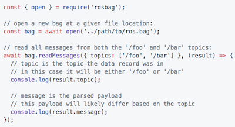
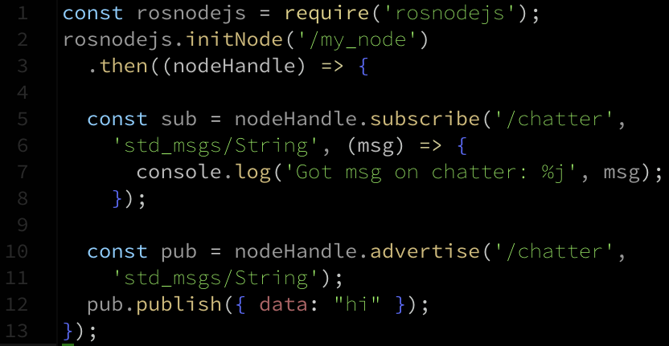

rclnodejs
Node.js client library for the ROS 2

roslibjs
ROS Javascript Library

ros2djs
2d visualization library for use with the ros javascript libraries
ros3djs
3d visualization library for use with the ros javascript libraries

rosbag.js
Read bag files in javascript
worldview
2d and 3d scene renderer built with react and webgl

rosnodejs
Native Node.js ROS1 client implementation
Transitive
A framework for building robot web portal